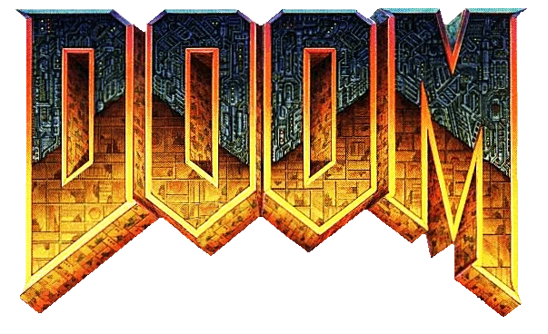

Doom, un juego de 1993, con casi 30 años
es un meme de internet debido a que varias
personas han instalado el juego Doom en casi
cualquier objeto.
Doom se ha instalado con éxito en innumerables cosas
a lo largo de los años, desde calculadoras de bolsillo
hasta refrigeradores, siendo los lugares mas raros:
-En una prueba de embarazo (Twitter @Foone )
-En un piano
-En una impresora
-En una tostadora (más o menos)
-Dentro del mismo Doom
